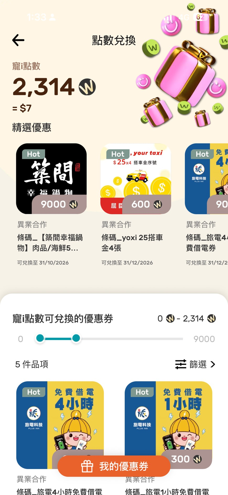
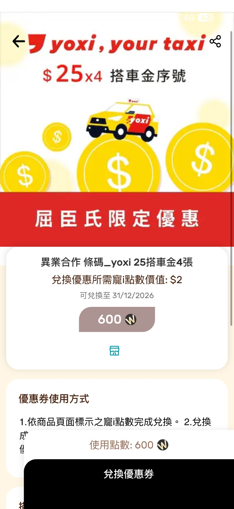
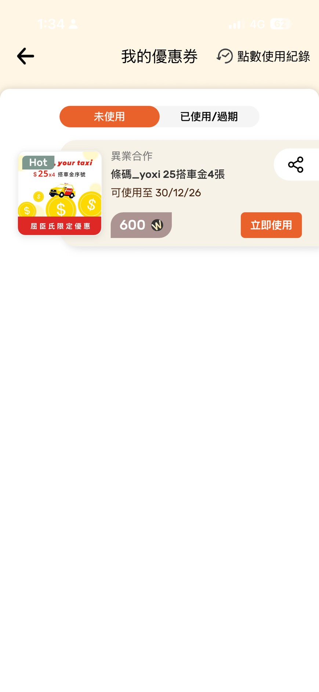
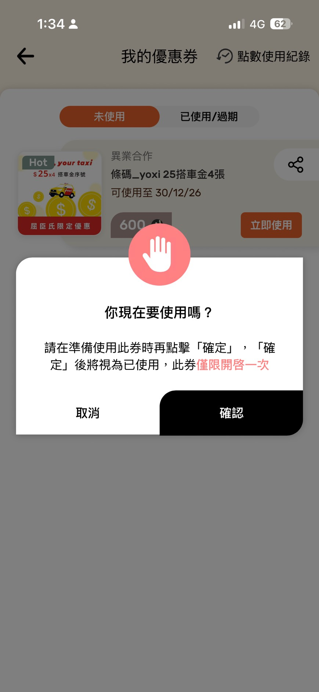
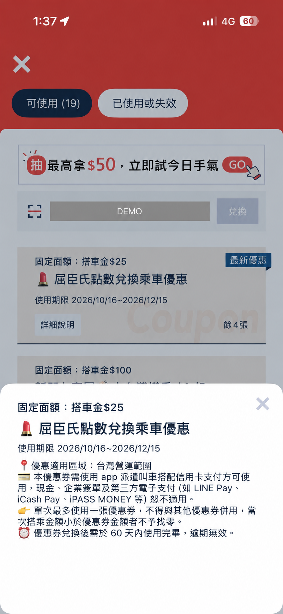

WATSONS CLUB · MEMBER POINTS每一點日常，
都能換成喜歡。
屈臣氏會員 7 × 4 點數好康
週日買得開心，週四折得有感。
從日常購物到點數兌換，讓美麗與健康多一點回饋。
活動至 2026.12.31 ✦✦MY REWARDS WEEK
SUN週日累點7倍送
THU週四折抵2倍折
W
＋
把點數，變成你的日常小確幸。
週日消費每 NT$1累積 7 點含基本 1 點＋回饋 6 點
週四使用 3,000 點折抵 NT$20每人每週限額外回饋一次
一般點數折抵300 點＝NT$1適用門市、官網與 APP
01 / EARN MORE週日，讓點數
累積得更快一點。
不分品類、不限金額，週日消費享點數 7 倍送。結帳每 NT$1，可累積 7 點。
日常補貨、保養必需品，都能一起累積下次折抵的點數。
適用通路台灣屈臣氏實體門市、官方網站、APP、蝦皮商城、Uber Eats
不適用樂天市場、Foodpanda、friDay 購物或其他通路。活動至 2026/12/31。
SUNDAY IS POINTS DAYNT$1週日結帳金額→7點會員點數
基本 1 點 ＋ 回饋 6 點
每一份喜歡，都多一點回饋。
IN THE APP / 週日累點示意購物袋裡，
看見你的 7 倍回饋。
商品總價 NT$1,200，扣除兩項優惠共 NT$200，
以折後商品總額 NT$1,000 作為本例累點基礎。
基本 1 倍＋加送 6 倍＝7 倍送
9:41▮▮▮ 5G ▰
‹購物袋編輯
W新增寵點數基本點數 · 1 倍
1,000 點1 倍 W週日點數7倍送活動加送 · 額外 6 倍
6,000 點6 倍 商品總價NT$1,200
已享受的折扣／優惠−NT$200
優惠1＿滿額現折 xxxxxx−NT$100
優惠2＿折價券 ooooooo−NT$100
折後商品總額本例累點基礎NT$1,000
本例合計可累積7,000 點1,000 ＋ 6,000 ＝ 7,000
實付金額 NT$1,000下一步
HOW TO READ YOUR POINTS先扣優惠，再累點。
以折後 NT$1,000 計算。
商品總價NT$1,200兩項優惠合計−NT$200折後商品總額NT$1,000以折後金額作為本例累點基礎
01上方：基本 1 倍NT$1,000 × 1 ＝ 1,000 點
02下方：額外加送 6 倍NT$1,000 × 6 ＝ 6,000 點
合計 7 倍回饋7,000 點
畫面中的「7 倍送」為活動名稱；本例第二行數值代表額外加送的 6 倍點數，再加上第一行基本點數。畫面名稱與點數顯示以 APP 實際版本為準。
02 / SAVE MORE週四，點數
幫你多折一點。
使用 3,000 點，享 NT$20 折抵。
原點數折抵 NT$10，再加額外回饋 NT$10。
- 每人每週限額外回饋一次。
- 實體門市與官網／APP，限擇一參與。
- 須為已開卡會員；門市出示會員卡，官網／APP 登入會員結帳。
看懂折抵範例 ↗當筆消費扣除 3,000 點需消費金額超過 NT$20 才能使用本次回饋；不與其他優惠活動合併使用。完整限制請見活動辦法。
THURSDAY · 點數2倍折3,000 點NT$20OFF原點數折抵NT$10
週四額外回饋NT$10
每人每週限回饋一次
點數多於 3,000 點，額外回饋仍為 NT$10。
IN THE APP / 週四折抵示意輸入折抵 NT$10，
訂單享 NT$20 折抵。
週四符合活動條件時，使用 3,000 點折抵 NT$10，
系統再加上 NT$10 活動回饋。
APP 操作示意 · 供版面討論9:41▮▮▮ 5G ▰
‹結帳
▱我的儲值卡
請於結帳時確認可用餘額請輸入抵用金額 $ 兌換
02輸入 10，確認訂單折抵 20
留意下方週四 2 倍折的系統提示。
9:41▮▮▮ 5G ▰
‹結帳
寵點數 ×
您有 3,000 會員點數，等同於抵用金額 $10
本例輸入抵用金額 $10
週四點數2倍折輸入 $10元可折$20元
（每週限一次，詳見會員權益）
訂單折抵金額 確認後的效果示意NT$20
全部清除確認
輸入抵用金額NT$10使用 3,000 點
＋週四額外回饋NT$10每人每週限一次
＝訂單合計折抵NT$20符合週四活動條件時
以上為示意數值，非個人帳戶資料。實體門市與官網／APP 限擇一參與；須符合消費金額及其他活動條件，詳細規則請見下方活動辦法。額外回饋為 NT$10，不是所有輸入金額皆可翻倍折抵。
03 / MORE POSSIBILITIES不只折現金，
還能換更多喜歡。
實體門市限定W＋
超值點爆價
使用點數換購指定商品，發現日常生活的超值好康。商品、售價與優惠依實際門市公告為準。
僅限門市一般結帳櫃台；自助結帳與官網／APP 不適用。點數足夠時直接扣點，無法選擇以原價購買；點數不足須以原價購買。
查看點爆價規則 ↓屈臣氏 APP✦
點數兌換中心
在 APP 會員中心，挑選想兌換的優惠券或商品兌換券。先確認使用期限、適用門市與庫存，再進行兌換。
一經兌換不接受退貨、取消或返還點數；實體優惠券限門市人工收銀櫃台使用。
看看兌換流程 ↓
REDEEM IN THE APP
把點數換成好康，跟著做。
從會員中心開始，
找到你的下一份小確幸。
STEP 01選擇想兌換的優惠
從 APP 會員中心開啟「點數兌換中心」，依可用點數挑選優惠；也可使用篩選功能。

點選圖片可放大檢視STEP 02確認條件，兌換優惠券
查看所需點數、兌換期限與使用方式，確認後點選「兌換優惠券」。

點選圖片可放大檢視STEP 03到「我的優惠券」查看
兌換成功後，前往「我的優惠券」，在「未使用」找到優惠券；準備使用時再點「立即使用」。

點選圖片可放大檢視STEP 04準備使用，再按確認
畫面會詢問「你現在要使用嗎？」。請在準備使用時才按「確認」；確認後將視為已使用，此券僅限開啟一次。

點選圖片可放大檢視STEP 05查看券面資訊並使用
依開啟後的券面資訊與使用規範完成使用。此例為乘車優惠；其他優惠的兌換方式，請依各券說明操作。

點選圖片可放大檢視
以上為 APP 操作畫面範例；點數餘額、優惠品項、兌換點數與期限依個人帳戶及當期券面資訊為準。兌換優惠券與確認使用為不同操作，請先詳閱條件。
展開官方活動圖與 APP 操作畫面
以下保留官方原圖供核對；商品優惠與券面資訊請以 APP 及門市當期公告為準。
GOOD TO KNOW
你的點數疑問，
這裡有解答。
屈臣氏會員點數怎麼累積？
一般消費結帳每 NT$1 累積 1 點。活動期間週日每 NT$1 累積 7 點，包含基本 1 點與回饋 6 點。適用通路請見上方比較。
週四 6,000 點，可以折 NT$40 嗎？
不可以。依官方範例，6,000 點的一般折抵為 NT$20，加上週四額外回饋 NT$10，合計折抵 NT$30。額外回饋每人每週限一次，且實體門市與官網／APP 限擇一參與。
會員點數什麼時候到期？
依官方寵i會員權益說明，當年累積的點數於隔年 11/30 到期歸零。請留意個人點數與官方公告。查看會員權益 ↗
週四折抵，門市和 APP 可以各用一次嗎？
不可以。每人每週限額外回饋一次，實體門市與官網／APP 限擇一參與；折抵須為已開卡會員。
APP 點數兌換後，可以取消或退點嗎？
使用點數兌換的優惠券，一經兌換即視為成立，不接受退貨、取消、補差價或返還點數，也不得更換其他商品或優惠。兌換前請確認券面條件與門市庫存。
POINTS, MADE CLEAR
有多少點，可以折多少？
以單筆折前 NT$3,000 為例，
符合週四活動資格時，額外多折 NT$10。
週四折抵範例｜假設使用下列全部可用點數| 使用點數 | 一般折抵 | 週四額外回饋 | 合計可折 | 折後金額 |
|---|
| 1,200 點 | NT$4 | — | NT$4 | NT$2,996 |
|---|
| 2,100 點 | NT$7 | — | NT$7 | NT$2,993 |
|---|
| 3,000 點 | NT$10 | NT$10 | NT$20 | NT$2,980 |
|---|
| 6,000 點 | NT$20 | NT$10 | NT$30 | NT$2,970 |
|---|
| 9,000 點 | NT$30 | NT$10 | NT$40 | NT$2,960 |
|---|
| 12,000 點 | NT$40 | NT$10 | NT$50 | NT$2,950 |
|---|
不足 3,000 點僅適用一般折抵。週四額外回饋不會隨使用點數倍增。表格依官方會員權益頁範例整理。
WHERE TO USE累點與折抵，
適用通路不一樣。
先確認購物通路，點數好康不錯過。
| 購物通路 | 週日 7 倍送 | 週四 2 倍折 |
|---|
| 台灣實體門市 | 適用 | 適用 |
|---|
| 官方網站／APP | 適用 | 適用 |
|---|
| 蝦皮商城／Uber Eats | 適用 | 不適用 |
|---|
| 樂天／Foodpanda／friDay／其他通路 | 不適用 | 不適用 |
|---|
A LITTLE MORE, EVERY DAY讓每一點，都有值得期待的用途。
綁定行動寵i卡，開啟你的會員點數日常。
查看 APP 綁定攻略 ↗
TERMS & CONDITIONS會員權益活動辦法與說明
以下保留 2026/10/16 讀取的官方原頁條款；活動期間即日起至 2026/12/31。最新內容請以官方活動頁為準。
【會員權益活動辦法與說明】
●週日點數7倍送
1.週日消費，結帳金額每NT$1元可以累積7點(含基本1點+回饋6點)，積點更快速。
2.週日點數7倍送適用於台灣屈臣氏實體門市、官方網站、屈臣氏APP及蝦皮商城及Uber Eats，恕不適用於樂天市場、Foodpanda、friDay購物或其他通路。
●週四點數2倍折
1.週四至實體門市或台灣屈臣氏官網/APP消費折抵3,000點可折NT$20元(包含原點數折抵NT$10元與額外回饋NT$10元)，每人每週限回饋一次，實體門市與官網/APP限擇一參與本優惠。 折抵點數須為已開卡會員，於實體門市消費結帳時出示實體會員卡或電子會員卡(屈臣氏APP/屈臣氏LINE官方帳號)；於台灣屈臣氏官網/APP則需登入會員結帳。 當筆消費扣除點數3,000點需消費金額超過20元才能使用本次回饋。 本活動僅適用於台灣屈臣氏實體門市、台灣屈臣氏官方網站、台灣屈臣氏APP，恕不適用於蝦皮商城、Uber Eats、樂天市場、Foodpanda、friDay購物或其他通路，且不與其他優惠活動合併使用。
●點爆價
1.本活動不同享任何優惠(包含特變價/樂翻天/銀行日滿額折扣等活動)。
2.本活動僅限門市一般結帳櫃台可參與，門市自助結帳櫃檯與官網/APP皆無法參與。
3.本活動僅限台灣屈臣氏已開卡會員參與，並需於結帳時出示實體會員卡或電子會員卡(屈臣氏APP/屈臣氏LINE官方帳號)，方可參與點數換購活動。
4.點數扣除：購買本活動商品時請先確認會員點數足夠。若會員結帳時點數足夠則會直接扣點，且無法以原價購買；若點數不足則須以原價購買。
5.本活動頁面商品售價與優惠請依據實際門市公告為主。
●點數兌換中心
1.各項兌換活動是否有名額限制，請以屈臣氏APP「點數兌換中心」顯示資訊為準，恕不另行公告。
2.以點數兌換之實體優惠券，僅限於門市人工收銀櫃檯使用，自助結帳機 台恕不適用。
3.使用寵i點數兌換之優惠券，一經兌換即視為成立，恕不接受退貨、取消、補差價、要求返還點數，亦不得更換其他商品或優惠。
4.點數兌換之優惠券每張限使用乙次，不得重複使用、轉贈、轉售、影印、複製或兌換現金。
5.點數兌換之商品或優惠，實際可兌換數量以活動門市現有庫存為準，並以單 一活動門市庫存為限。建議兌換前先向活動門市確認實際庫存狀況再進行兌換。
6.本活動不適用以下活動、品類及商品，活動除外商品： 除外活動：加$1多1件、買1送1、2件5折；換購商品、箱購、廠商直送、專案特談套組；會員驚爆價、數位印花/集點商品、預購商品。 除外品類：開架彩妝、專櫃、香水、嬰兒尿布、奶粉、隱形眼鏡、抽取式衛生紙、廚房紙巾、成人紙尿褲。 除外商品：合利他命、維骨力、若元錠(WAKAMOTO)、紐力活、循利寧、亞培、娘家、德國百靈油、老協珍、晶亮保、淨脈舒、補體素、太陽星；CeraVe、ALLIE、Truu童、理膚寶水、re'dermx瑞德膚、Ulike、SUISAI；鳳梨酥。
7.優惠券須於指定有效期間內使用，逾期即失效，恕不補發或延長使用期限。
8.若因商品缺貨、停產、不可抗力或系統異常等因素，致無法提供原兌換內容，屈臣氏得視情況提供等值替代方案或取消兌換，實際處理方式以屈臣氏公告為準。
※ 上述活動期間：即日起至2026/12/31止。
※ 參加活動之會員視同承認本規定之效力，如有未盡事宜，台灣屈臣氏個人用品商店股份有限公司保留修改、終止、變更活動內容細節之權利，並對活動相關事項保有最終解釋及決定權，且不另行通知。會員瞭解台灣屈臣氏個人用品商店股份有限公司之寵i會員制度若有相關變更，台灣屈臣氏個人用品商店股份有限公司得以於官網、APP公告或以電子郵件、簡訊通知之方式辦理，所變更或調整之內容，除特別告知者外，於公告或發出通知時生效。